Solder is a fusible metal alloy used to make permanent electrical connections between wires and other electronic components. If you really want to dive deep into robotics, eventually you’ll need to learn to solder. By using solder that melts under relatively low temperatures of a few hundred degrees, you can join two pieces of metal together and create an electrical bond. This requires both a particular set of tools and a number of safety precautions.
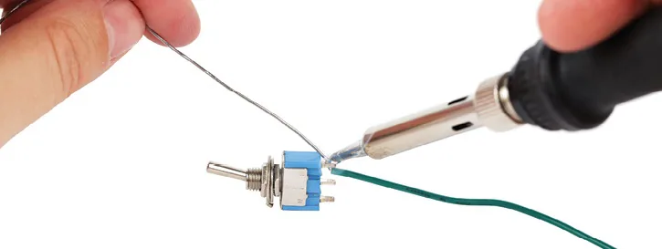
Soldering Tools and Materials
You’ll need a number of basic items before soldering. First is a soldering iron. Although you can spend hundreds of dollars on a fancy soldering iron, a $15 adjustable iron (rated for about 60 W) should suffice to get started.
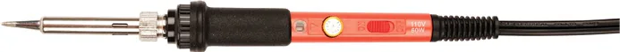
Once you have a soldering iron, you’ll need a heatproof stand on which to rest the soldering iron when you are not using it. Most soldering irons typically come with a stand, but if yours does not, you absolutely need to purchase one.
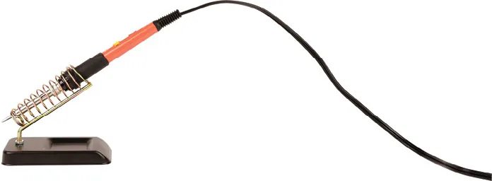
A cleaning pad is also necessary for cleaning the tip of the soldering iron after each use. Two commonly available options are wire pads, which tend to last longer, and slightly dampened sponges, which you should be able to find around your house. Use whichever you prefer.
You’ll also need some solder. I highly recommend getting a roll of lead-free solder. It melts at a slightly higher temperature than lead solder and is a bit harder to work with, but it’s not as toxic to handle. At the end of the day, your health should take priority over ease of use.
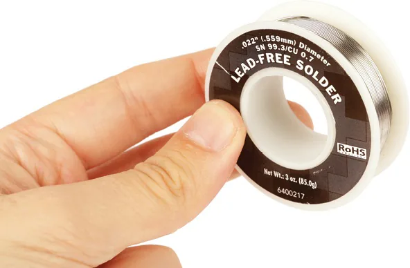
Desoldering braid, for undoing soldering mistakes, is another essential item for the projects in this book. It is also critical for removing solder from the circuit board inside of servo motors in order to detach the circuit from the motor itself, which is an action you’ll need to take repeatedly when building these bots.
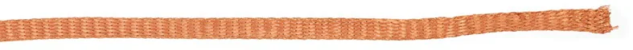
Finally, you should get a fume extractor fan to remove soldering fumes and protect your lungs. When melted, solder releases nasty fumes that you should avoid breathing in. It is best to use a filtered exhaust fan while soldering. At the very least, solder in a place with decent airflow blowing away from you to prevent the exhaust fumes from lingering.
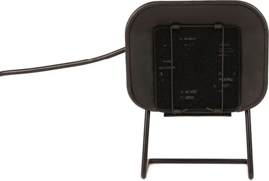
Getting Started
Before you plug in your soldering iron, it is important to understand how to handle it safely when it is powered up. Hold the soldering iron much in the same way as you would hold a pencil, but with a very important exception. Instead of grasping the soldering iron near the tip, your hand should always grasp the insulated handle.
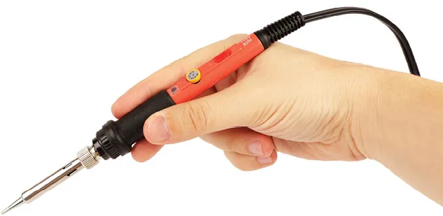
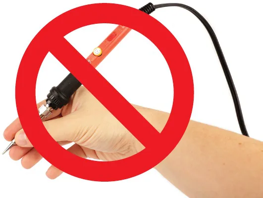
Once you have a grasp on that, place the soldering iron in its holder, plug it in, and wait a few minutes for it to heat up to a temperature hot enough to melt solder. You can test that it’s ready simply by touching the tip to some solder and seeing if it melts. If it does, you are ready to begin soldering. Also, while you are at it, turn on your exhaust fan, and make sure that you have the solder and soldering iron cleaning pad on hand.
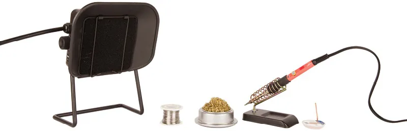
The first time you use the soldering iron, you’ll want to tin the tip. This means melting a coating of solder around the surface of the tip to coat it and keep it working well.
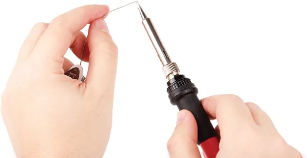
Melt solder all over the surface of the soldering iron tip until it has a nice, shiny silver coating. This will protect the metal tip from oxidizing and allow it to melt solder easily.
Soldering Wires
The best way to practice soldering is to solder two wires together. Strip the ends off of two sections of wire and twist or hook the metallic ends together. Next, heat up the metal ends of the wires while pushing a piece of solder into the joint. The solder should liquify and spread over the joint, fusing the two together. If done correctly, the joint should look silver and shiny without any black patches or bulbous bits of solder protruding from it.
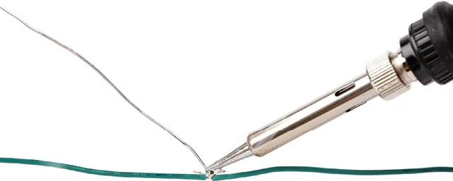
After you have effectively soldered the two pieces of wire together, clean the tip of the soldering iron by dragging it across the cleaning pad two or three times until the excess solder is removed.
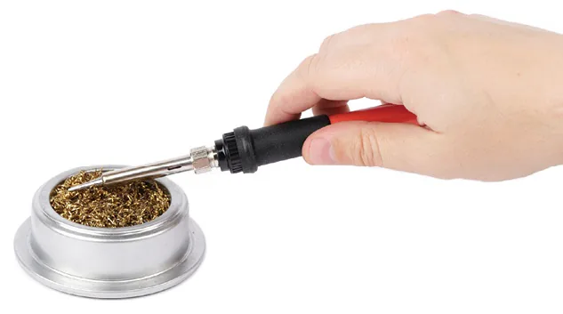
If your solder connection is gray, black, bulbous, or feels rough in texture when cooled, you have created a cold solder joint by not sufficiently heating up the wires you are soldering together. You’ll likely need to redo it. The easiest way is to trim the wires and start over.
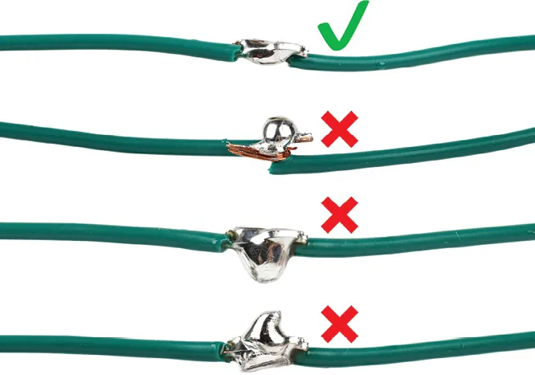
The last thing to consider is that it’s best practice to insulate the wire connection. This helps prevent short circuits and other unwanted errors. The best way to do this is to use shrink tube to cover the solder joints.
Keep in mind that you’ll need to slide the shrink tube on the wire prior to soldering the wire together, and then you’ll position it once the wires are soldered. Finally, you’ll want to shrink it using a heat gun so it fits snugly around the solder connection.
A heat gun is basically a turbocharged hair dryer that gets very, very hot. You need to be careful to point it away from you; otherwise, you could burn yourself. You also need to be careful not to point it at anything that might accidentally catch on fire (like paper).
Aside from soldering wires together, you can solder wires to components, such as motor terminals and switches. You can also solder components and wires directly to circuit boards, such as the components inside the servo motor.
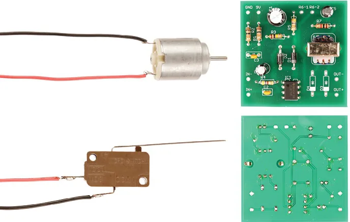
Desoldering
If you mess up and solder the wrong things together, you can use desoldering braid to remove solder and separate parts. To desolder, unwind some desoldering braid from its spool and lay it flat on the soldering connection you want to undo. Next, press down on the desoldering braid with your soldering iron until the solder starts to melt and be absorbed into the braid.
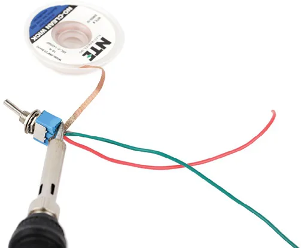
This is a little bit tricky and takes some practice to get right, but you’re about to get a bit of practice doing this as you begin to modify a servo for direct drive.
Modifying the Servo for Direct Drive
As you start building bots, you’ll find yourself repeating these steps often. At least one modified servo is called for with every bot in this book. You may find the desoldering process frustrating at times, but stick with it. The more you do it, the easier it will become.
Open the servo motor by removing the four screws holding the servo’s back lid on and then removing the lid.
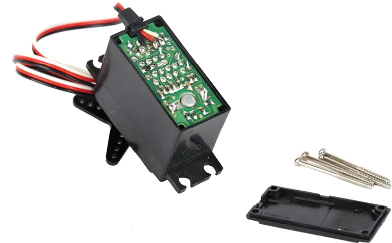
Unwind a few inches of desoldering braid from its spool.
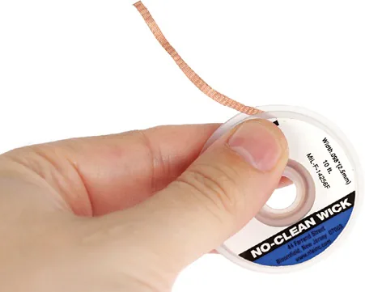
Locate the two solder connections for the DC motor on the servo’s circuit board. These connections will be the two largest blobs of solder on one end of the circuit board. Often there will be a cutaway in the circuit board itself, and you might even be able to see a little bit of the metal motor casing.
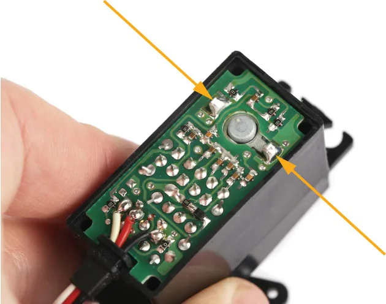
Place the desoldering braid over the motor’s solder joints.
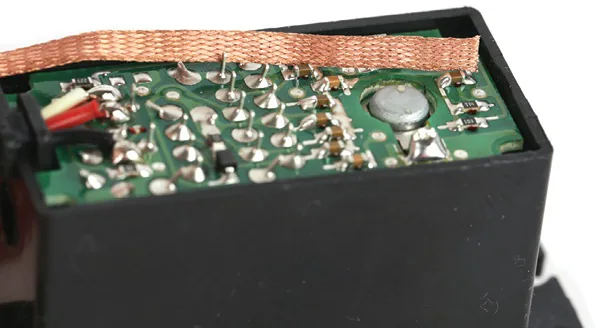
Press down on top of the desoldering braid with your soldering iron until you see and/or feel the solder beneath the braid start to liquify and flow. You’ll see the desoldering braid around the tip of the soldering iron begin to turn silver.
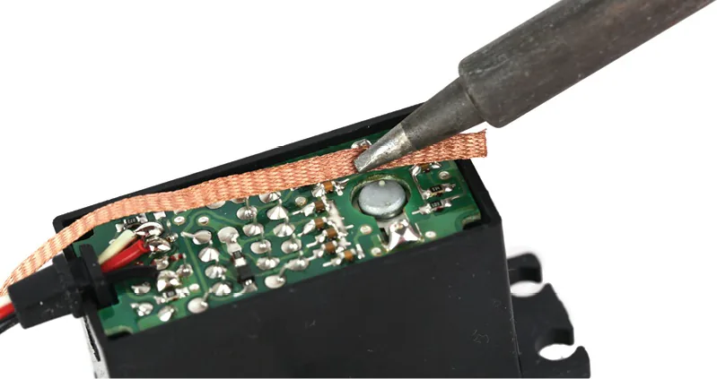
Once the desoldering braid has started turning silver, count to two and simultaneously lift away the soldering iron and the desoldering braid by gripping its packaging (and not the exposed metal braid).
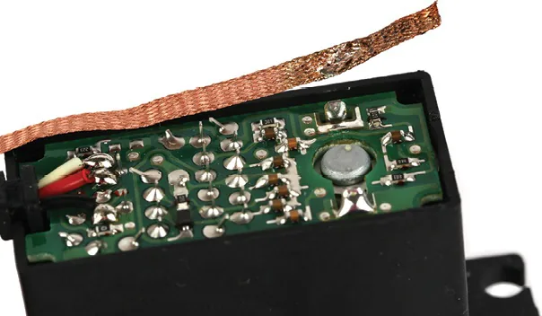
On the braid, you should now see a shiny solder blob. If all went well, most of the blob of solder on the circuit board will be gone, and the circuit board will be detached from the motor pin. If solder is still attaching the motor pin to the circuit board, simply repeat the process until the motor pin has been completely desoldered from the board. Repeat this same process for the second motor pin.
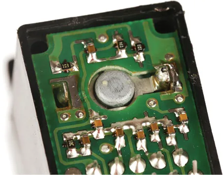
Once both pins have been freed, remove the circuit board from the body of the servo.
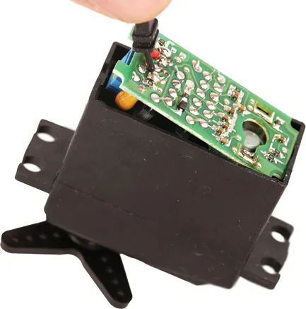
Now you can practice your soldering skills. To begin, cut a red wire and black wire to 6 inches in length and then strip 1/2 inch of insulation off the end of each. Next, apply a light coat of solder to the end of each wire.
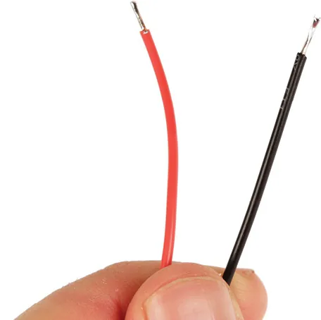
This is called tinning, just as you did with the soldering iron tip earlier. You do this because solder really likes to stick to other solder. Since the motor pins already have a little solder on them, applying a little bit of solder to each wire makes it much easier to connect the wires and pins together.
Place the red wire against the motor pin closest to the red dot on the back of the motor. If your motor doesn’t have a red dot, pick a side of the servo motor to be designated the “left side” and always attach your red wires to that side.
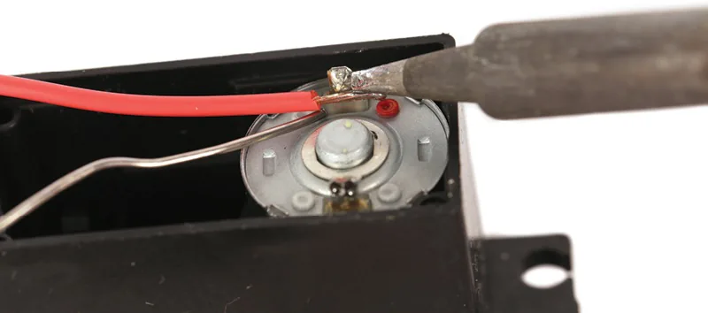
Once that is squared away, carefully apply the soldering iron to the joint where the wire and pin meet and melt a little bit of solder into it. You should see the solder start to liquify and spread over both. When this happens, remove the soldering iron and solder and then wait for the solder joint to cool and solidify before handling it.
Repeat this process using the black wire and the other motor pin.
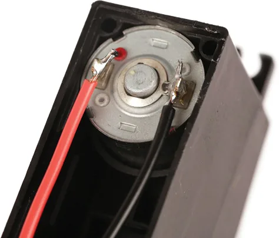
Tie the motor’s wires in a knot such that the knot would be located outside of the servo’s enclosure should you pull on the cord. Once you are sure of this, place the knot inside of the servo’s enclosure. Having this knot inside the servo will prevent the motor’s wires from becoming detached from the motor pin if you pull on them.
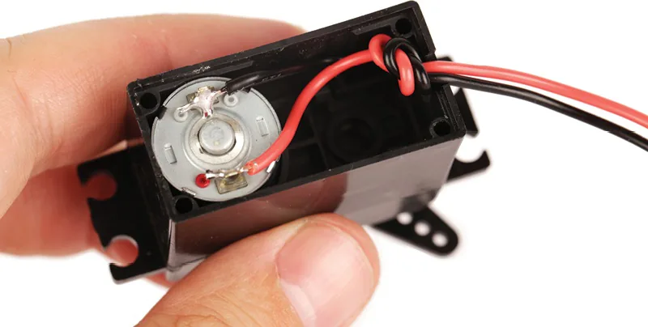
Reassemble the servo and reinsert the screws holding it together.
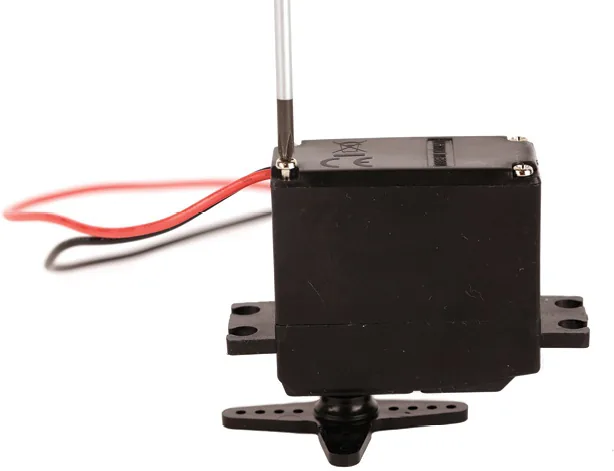
Your servo is now able to be powered directly from batteries. To make it spin, simply connect each wire from your servo to the power wire with the same color coming from a battery pack.
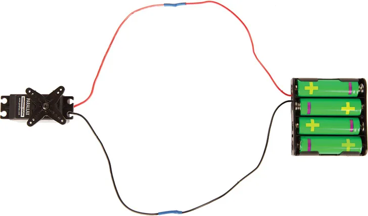
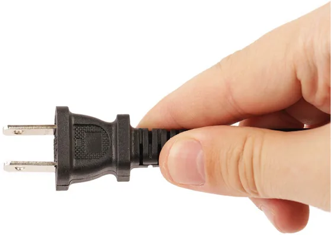
While soldering and desoldering are necessary skills for advancing in robotics, if you are not quite ready to try them, you can build entire circuits without any soldering at all. To discover alternatives for making electrical connections without soldering, check out Appendix A.